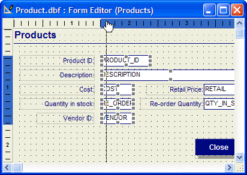
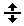
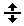
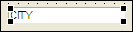

Editing Objects
Before you can change an object's properties, move, resize, or delete it, you must first select it. You select a single object by clicking on it with the Selection tool from the toolbar; you select multiple objects by either holding down the SHIFT key while clicking on each object with the selection tool, or by using the selection tool to draw a rectangle (lasso) around the objects to be selected.
While manipulating layout objects, you primarily use the Selection tool from the Toolbox. You can also use the horizontal and vertical shift tools to move single or multiple objects. Finally, you can have Alpha Anywhere layer objects, group objects, as well as move, size, and space objects by selecting commands from the Arrange menu.
When you use the selection tool to lasso objects, the lasso will select any object it comes into contact with. For more precise selection, hold down the Minus "-" key on your numeric keypad while drawing the lasso, and only objects that are entirely within the lasso selection area will be selected.
The simplest way to move an object is to click on it to select the object and drag it with the mouse.
An alternative but more precise method is to right click on the object and choose Properties... from the right-click menu. When the Properties dialog box appears, click the Dimensions tab, and then set the Position controls.
When moving a selected object with the arrow keys, you can hold the SHIFT key to shorten the distance your selected object moves. This is helpful for making small, precise movements or "nudging."
Moving Objects with the Rulers
You can also use the layout rulers to move a group of objects. Make sure the rulers are visible by selecting View > Rulers..

Using Rulers to Move Objects
Left-clicking on the horizontal or vertical ruler creates a horizontal or vertical line, which selects objects that cross that line. While holding down the mouse button, you can move the selected objects as a group, preserving their relative alignment.
If you right-click in a ruler, you can use the right-click menu options to align the objects that the line touches.
Horizontal and Vertical Shifting of Groups of Objects
You can quickly reposition objects on a layout by using the Horizontal
 or Vertical Shifttools. These tools let
you insert space into your layout by moving groups of objects horizontally
or vertically. To use either tool, select it on the Toolbox, then click
and drag objects across the layout.
or Vertical Shifttools. These tools let
you insert space into your layout by moving groups of objects horizontally
or vertically. To use either tool, select it on the Toolbox, then click
and drag objects across the layout.
To delete an object, first select it, and then press DELETE.
To adjust the size of an object, first click on it to make sizing handles appear.

Field Object with Sizing Handles
Click and drag any of the handles to change the size of the object. You can also change the object's size by using the keyboard. When the sizing handles appear, hold down CTRL, and use the arrow keys to change the object's size.
Alternatively, you can set an object's size in the Properties dialog box. To access this dialog box, right click on the object and choose Properties... from the right-click menu. When the Properties dialog box appears, click the Dimensions tab, and set the dimensions in the Width and Height controls.
To lock the relative positions of multiple objects, you can group objects and then work with the group as a single object. Objects within a group maintain their relative positions to each other as the group is moved.
To group objects, first select the objects you want to group then select Arrange > Group.
To align objects within a layout, you can use the Rulers, the Alignment Grid, or the Alignment Menu commands.
The layout rulers are located on the top and left sides of the layout window. Use them as guides when placing, sizing, and moving objects. When working with an object, indicator bars appear on both rulers to show the cursor position and the object's size. To activate or deactivate the rulers, select View > Rulers.
When you first start creating a layout, a grid of dots appears in the background. These dots provide visual markings that make it easier to place, size, or move an object. To activate, deactivate, or change the spacing of the dots on the grid, open the Grid dialog box. This is done by choosing Grid from the Form, Report, Letter, or Label menu.
From within the Grid dialog box, you can set the size of a grid block between one-twentieth (.05) and one-half (.5) inch, or 2 mm to 1 cm, depending on your Windows configuration.
You can activate or deactivate the grid by checking or de-selecting the Show Grid check box.
Also, you can activate the snap-to setting by checking the Snap to Grid check box. The snap-to setting automatically positions any object you create or size so that it lines up with the nearest grid point. (This feature does not work for objects you have already placed or sized.)
The Align Positions, Align Sizes, and Align Spaces commands (found in the Arrange menu) let you align multiple objects' positions, sizes, and spaces based on the first object you select. Each of these commands have choices which can be made from a pull-out menu. Refer to the following tables to see how these commands operate. The Align Positions command has the following options:
|
Option |
Action |
|
Left |
Aligns selected objects to the left edge of the first selected object |
|
Center Width |
Moves the selected objects horizontally so they are centered using the first selected object as the point of reference. |
|
Right |
Aligns selected objects to the right edge of the first selected object. |
|
|
Aligns selected objects to the top edge of the first selected object. |
|
Center Height |
Moves the selected objects vertically so they are centered using the first selected object as the point of reference. |
|
|
Aligns selected objects to the bottom edge of the fist selected object. |
When two or more objects are aligned, the first selected object stays put, and the others move into alignment with it.
The Align Sizes command has the following options:
|
Option |
Action |
|
|
Re-sizes objects so they are as wide as the first selected object. |
|
Height |
Re-sizes objects so they are the same height as the first selected object. |
|
Both |
Re-sizes objects so they are the same size as the first selected object. |
When you size two or more objects, the first selected object stays the same, while the rest change.
The Align Spaces command has the following options:
|
Option |
Action |
|
Horizontal |
Moves objects horizontally, creating an equal amount of space between them, left to right. |
|
Vertical |
Moves objects vertically, creating equal space between them, top to bottom. |
When you adjust spacing between objects, the spacing between the first two objects remains the same while the others are moved.
As each object is placed, it is layered on top of other objects. The first group of options on the Arrange menu lets you move a layered object in back, or in front, of other layout objects. For example, if you create a button on a form and then place a frame around it, the frame covers the button, preventing you from pressing it when the form is run. You can use the To Front command on the Arrange menu to move the button to the front of the layout order. This action allows the button to be pressed.
Horizontal and Vertical Shifting
You can quickly reposition objects on a layout by using the Horizontal
 or Vertical Shift tools. These tools let
you insert space into your layout by moving groups of objects horizontally
or vertically. To use either tool, select it on the Toolbox,
then click and drag objects across the layout.
or Vertical Shift tools. These tools let
you insert space into your layout by moving groups of objects horizontally
or vertically. To use either tool, select it on the Toolbox,
then click and drag objects across the layout.